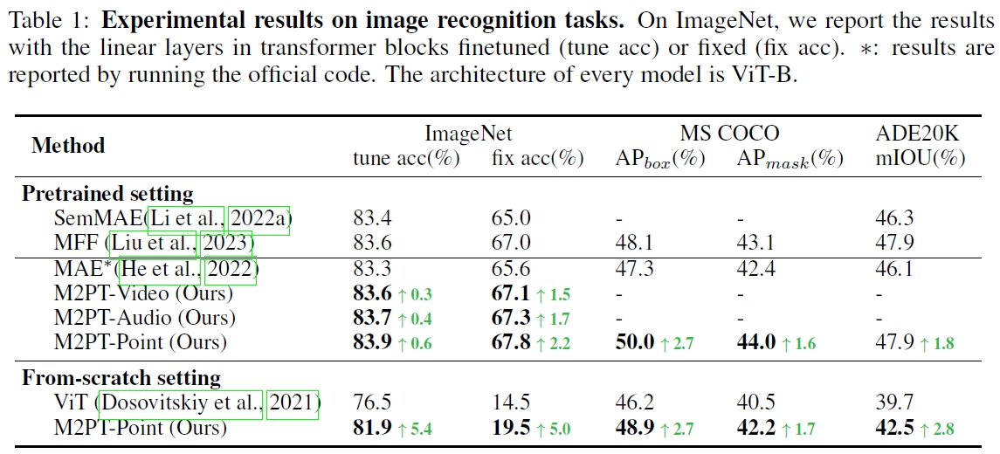
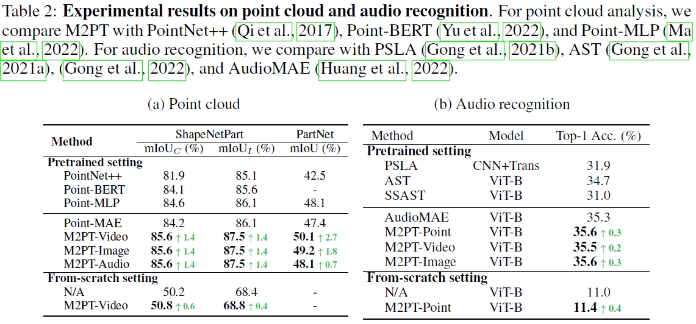

Demo of Multimodal Pathway
* We leverage the Demo Video of Google Pathways for better understanding.

This diagram's composition is inspired by a figure in Jeff Dean's blog post, where he envisions "pathways" as a high-level concept for general AI models. Our proposed Multimodal Pathway Transformer is a novel approach, and we are delighted to discover that some of its effects align with Jeff Dean's high-level vision, such as training a single model to *do many things, enabling multiple senses, and making models sparse and efficient*. Multimodal Pathway Transformer can be seen as an initial exploration of this "pathways" concept in the context of basic Transformer models and multimodal learning. Read more about Jeff Dean's concept in his blog post.
We propose to improve transformers of a specific modality with irrelevant data from other modalities, e.g., improve an ImageNet model with audio or point cloud datasets. We would like to highlight that the data samples of the target modality are irrelevant to the other modalities, which distinguishes our method from other works utilizing paired (e.g., CLIP) or interleaved data of different modalities. We propose a methodology named Multimodal Pathway: given a target modality and a transformer designed for it, we use an auxiliary transformer trained with data of another modality and construct pathways to connect components of the two models so that data of the target modality can be processed by both models. In this way, we utilize the universal sequence-to-sequence modeling abilities of transformers obtained from two modalities. As a concrete implementation, we use a modality-specific tokenizer and task-specific head as usual but utilize the transformer blocks of the auxiliary model via a proposed method named Cross-Modal Re-parameterization, which exploits the auxiliary weights without any inference costs. We observe significant and consistent performance improvements with irrelevant data of image, point cloud, video, and audio. For example, on ImageNet-1K, a point-cloud-trained auxiliary transformer can improve an MAE-pretrained ViT by 0.6% and a ViT trained from scratch by 5.4%.
* We leverage the Demo Video of Google Pathways for better understanding.
(Left) The framework of Multimodal Pathway Transformer (M2PT). We take point cloud and image as the two representative modalities. Common practices with transformers follow the same pipeline: using 1) tokenizers to convert the input data to sequences, 2) transformer blocks to process the sequences, and 3) heads to decode the sequences. We upgrade the sequence-tosequence modeling by establishing pathways between the components of different modalities so that processing the tokens of a specific modality can utilize the transformer blocks trained with another modality. (Middle) Our design of M2PT, where the pathways are implemented by letting a linear layer (including the Query/Key/Value/projection layers in the attention block and those in the FFN block) in the target model cooperate with its counterpart in the auxiliary model. (Right) Cross-Modal Re-parameterization efficiently realizes M2PT by re-parameterizing the weights of the target model with those of the auxiliary model, which introduces completely no inference costs.
We conduct experiments across the image, video, point cloud, and audio modalities. It shows that Multimodal Pathway brings consistent improvements among 4 modalities. In specific, with a base-scale transformer, our method achieves 83.9% (+0.6) top-1 accuracy on ImageNet-1K, 82.3% (+0.8) on Kinectis-400, 47.6% (+2.7) mIoU on PartNet, and 35.6% (+0.3) on Audioset. Such results demonstrate that it effectively improves transformers with irrelevant data from other modalities.
Compared with existing methods, Multimodal Pathway brings out outstanding improvements on performance.

@article{zhang2024multimodal,
title={Multimodal Pathway: Improve Transformers with Irrelevant Data from Other Modalities},
author={Zhang, Yiyuan and Ding, Xiaohan and Gong, Kaixiong and Ge, Yixiao and Shan, Ying and Yue, Xiangyu},
journal={arXiv preprint arXiv:2401.xxxxx},
year={2024}
}